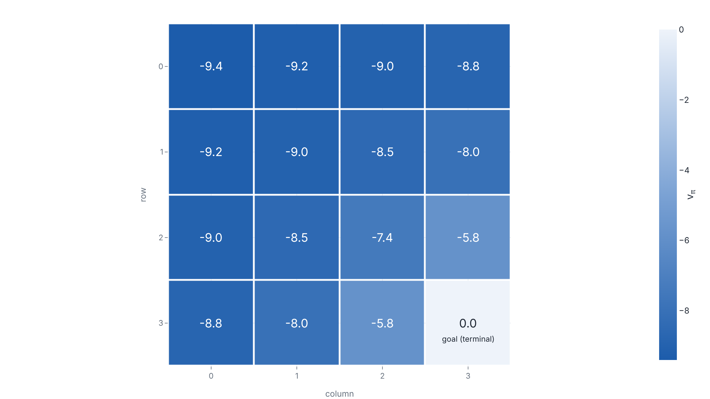

The value of a policy, computed on a gridworld
A bandit becomes reinforcement learning once an action changes which state comes next, and scoring even the equiprobable policy then takes sixteen coupled Bellman equations this lesson solves two ways.
Why this matters
You already know the bandit: one situation, a menu of actions, and a reward drawn after each pull. Reinforcement learning is what the bandit becomes when the action also changes what you see next. A move in a game, a motor command on a robot, a token appended to a prompt: each earns a reward and hands you a new situation. The next choice is made from there. This lesson builds the smallest honest version of that, a four-by-four gridworld. It answers the first quantitative question you can ask: given a fixed way of acting, how good is each state? By the end you can do three things. You can write an environment as a Markov decision process. You can write the Bellman equation that ties a state's value to its neighbours'. And you can compute that value exactly, two independent ways that check each other. Everything later in this course, up to training agents and language models, builds on those moves.
- 01
- Sutton and Barto, Reinforcement Learning: An Introduction, Chapter 3: the canonical treatment of finite Markov decision processes, returns, and value functions.
- 02
- David Silver, UCL Course on RL, Lecture 2: the same material as lecture slides, where the name Bellman expectation equation comes from.
The agent-environment loop
Fix the vocabulary first, because reinforcement learning reuses four plain words with exact meanings. A state is everything the agent sees at one moment; on the gridworld it is simply which of the sixteen cells the agent occupies. An action is a choice the agent can make there: move up, down, left, or right. A reward is the single number the environment pays after an action. A transition is the rule that turns the current state and action into the next state. A bandit has the last three and not the first: one state, so the action never changes where you are. Add states that the action moves between and you have the reinforcement-learning problem.
The pieces run in a loop. At step t the agent is in state S_t and chooses an action A_t. One step later the environment returns a reward R_{t+1} and the next state S_{t+1}. The reward carries the index t+1, not t, to mark that it and the next state are produced together by the same step. Both conventions appear in the literature; this lesson keeps Sutton and Barto's.1 Running the loop produces a trajectory S_0, A_0, R_1, S_1, A_1, R_2, S_2, \dots.
A gridworld, written as a Markov decision process
To compute anything, the loop needs a formal object. A finite Markov decision process is written here as the tuple (S, A, P, R, \gamma): states, actions, transition probabilities, a reward model, and a discount.2 The discount gets its own section next. Sutton and Barto write no such tuple; they take a single four-argument function as the primitive and derive the rest from it.1 That function is the dynamics:
From p come the two arrays the tuple names. The transition probability P[s, a, s'] = p(s' \mid s, a) = \sum_r p(s', r \mid s, a) sums the reward out. The expected reward R[s, a] = r(s, a) = \sum_{s', r} r\, p(s', r \mid s, a) averages it in.1 On the gridworld both are trivial, because the dynamics are deterministic. A move up lands in the cell above with probability one, and a move that would leave the grid stays put. Every move earns -1, so R[s, a] = -1 for every non-goal cell. The bottom-right cell is the goal: reaching it ends the episode, and a state that ends the episode is terminal, absorbing, with no further reward. Here is the grid built in code.
N_ROWS, N_COLS = 4, 4
N_STATES = N_ROWS * N_COLS
GOAL = N_STATES - 1 # bottom-right cell, terminal
STEP_REWARD = -1.0
ACTIONS = ("up", "down", "left", "right")
_DELTAS = {"up": (-1, 0), "down": (1, 0), "left": (0, -1), "right": (0, 1)}
def build_mdp():
next_state = np.zeros((N_STATES, 4), dtype=int)
reward = np.zeros((N_STATES, 4), dtype=float)
terminal = np.zeros(N_STATES, dtype=bool)
terminal[GOAL] = True
for s in range(N_STATES):
if terminal[s]:
next_state[s, :], reward[s, :] = s, 0.0 # absorbing
continue
r, c = divmod(s, N_COLS)
for a, name in enumerate(ACTIONS):
dr, dc = _DELTAS[name]
nr, nc = r + dr, c + dc
inside = (0 <= nr < N_ROWS) and (0 <= nc < N_COLS)
next_state[s, a] = (nr * N_COLS + nc) if inside else s
reward[s, a] = STEP_REWARD
return next_state, reward, terminalOne word in the name needs care. The process is Markov when the next state and reward depend on the current state and action and, given those, on nothing earlier. It is tempting to read this as "the past does not matter." The past matters, but only through the state. The condition restricts the state, not the process: the state must carry whatever about the history the future depends on.1 On the gridworld the single cell index satisfies this, because where the agent can go next turns only on where it is, never on how it got there. Equivalently, a state is Markov when the distribution of the next state given the whole history equals its distribution given the current state alone.2
Return and discounting
A reward is one step's pay. What the agent cares about is the whole future. The return measures it: the sum of rewards from a step onward, each later reward multiplied by a discount \gamma \in [0, 1] raised to its delay.1
The discount does two jobs. It keeps the sum finite: when rewards are bounded and \gamma < 1, the geometric weights make an infinite horizon converge, where an undiscounted infinite sum need not.3 And it values sooner reward above later: a reward k steps away is scaled by \gamma^k. The two limits bound the behaviour. At \gamma = 0 the return collapses to R_{t+1}, and the agent is myopic, weighing only the next reward. As \gamma \to 1 it weighs the distant future almost as heavily as the present.2 On the gridworld the step reward and the discount pull the same way. Every step costs -1, so a shorter route forfeits fewer future rewards, and \gamma < 1 discounts the costs that remain. A return that sums -1's prefers to reach the goal quickly. This lesson fixes \gamma = 0.9. A later section's convergence argument needs \gamma < 1, and 0.9 is what lets it apply.
From a policy to the Bellman equation
A policy \pi is how the agent acts: \pi(a \mid s) is the probability it takes action a in state s.1 The policy this lesson scores is the equiprobable one, drawn in Fig. 2: each of the four moves with probability one quarter, in every cell. Given a policy, the state-value function v_\pi(s) is the expected return from s when the agent follows \pi. The action-value function q_\pi(s, a) is the expected return from s after first taking a, then following \pi.1 The value of the terminal state is zero: there is no return left to collect.
The Bellman equation for v_\pi relates a state's value to its successors', and it falls out of the return's recursion in four steps. Start from the definition and substitute G_t = R_{t+1} + \gamma G_{t+1}:
Now average over what happens on the step. Conditioned on S_t = s, the agent draws an action a with probability \pi(a \mid s), and then the environment draws (s', r) with probability p(s', r \mid s, a). Writing the expectation as those two sums:
The step the textbooks pass over is the one inside the brackets. The inner expectation of G_{t+1} should, in full, be conditioned on everything known at that point: S_t = s, A_t = a, R_{t+1} = r and S_{t+1} = s'. The Markov property is what removes all but the last. The return G_{t+1} is a function of the future S_{t+1}, A_{t+1}, R_{t+2}, \dots, and given S_{t+1} = s' that future's distribution no longer depends on how the agent reached s'. So the conditioning on s, a and r drops. What is left is the expected return from s' under \pi, which is v_\pi(s') by definition. That substitution gives the Bellman equation.
- \pi(a \mid s)the policy: how likely the agent is to pick action a in state s
- p(s', r \mid s, a)the dynamics: the chance of landing in s' and collecting r
- rthe reward paid on this one step
- \gamma\, v_\pi(s')the discounted value of wherever the step lands
The same argument, started from q_\pi, gives the action-value form q_\pi(s, a) = \sum_{s', r} p(s', r \mid s, a)\,[\, r + \gamma \sum_{a'} \pi(a' \mid s')\, q_\pi(s', a') \,]. Sutton and Barto leave this one as an exercise and never number it, so its printed form here follows Silver and Spinning Up.23 For the rest of the lesson the state-value form is enough.
Solving for v_pi, then checking it by iteration
Fig. 3 is not one equation but sixteen, one per cell, and they are coupled: each cell's value is written in terms of its neighbours'. Two definitions turn the coupling into linear algebra. For the fixed policy \pi, let P_\pi[s, s'] = \sum_a \pi(a \mid s)\, p(s' \mid s, a) be the chance of moving from s to s' under \pi. Let r_\pi[s] = \sum_a \pi(a \mid s)\, r(s, a) be the expected one-step reward. Neither array is Sutton and Barto's; both follow Silver's induced Markov reward process.2 Stacked over the non-terminal states, Fig. 3 becomes one matrix equation.
The inverse exists, and one line says why, without a citation because no source in the record states it. Suppose (I - \gamma P_\pi)\, x = 0. Then x = \gamma P_\pi x, so x is a fixed point of the map v \mapsto \gamma P_\pi v. Each row of P_\pi is nonnegative and sums to at most one, so it cannot increase the largest absolute entry of a vector. Multiplying by \gamma < 1 then strictly shrinks it, so the map is a contraction and its only fixed point is 0. Hence x = 0, and I - \gamma P_\pi is invertible. The discount is doing the work again.
There is a second route to the same vector that needs no inverse. Treat the Bellman equation as an assignment and iterate it: iterative policy evaluation starts from v_0 = 0 and repeats v_{k+1} = r_\pi + \gamma P_\pi v_k until the values stop moving.14 It converges because the update T_\pi(v) = r_\pi + \gamma P_\pi v is a contraction in the maximum norm with factor \gamma. By Banach's fixed-point theorem it then has a unique fixed point, reached at a geometric rate, and v_\pi is that fixed point.45 That guarantee holds only for \gamma < 1; at \gamma = 1 the contraction factor is 1 and the argument proves nothing, which is the reason this lesson's grid discounts.
def induced(next_state, reward, policy): # P_pi and r_pi
n_states, n_actions = next_state.shape
p_pi = np.zeros((n_states, n_states))
r_pi = np.zeros(n_states)
for s in range(n_states):
for a in range(n_actions):
p_pi[s, next_state[s, a]] += policy[s, a]
r_pi[s] += policy[s, a] * reward[s, a]
return p_pi, r_pi
def direct_solve(p_pi, r_pi, terminal, gamma): # v = (I - gamma P)^-1 r
nt = np.where(~terminal)[0] # drop the terminal cell
p_sub, r_sub = p_pi[np.ix_(nt, nt)], r_pi[nt]
v = np.zeros(len(terminal))
v[nt] = np.linalg.solve(np.eye(len(nt)) - gamma * p_sub, r_sub)
return v
def iterative_eval(p_pi, r_pi, terminal, gamma, theta=1e-10):
v, sweeps = np.zeros(len(terminal)), 0
while True:
v_new = r_pi + gamma * p_pi @ v
v_new[terminal] = 0.0
delta = np.max(np.abs(v_new - v))
v, sweeps = v_new, sweeps + 1
if delta < theta:
return v, sweepsBefore trusting this code on a new grid it is worth a sanity check against a known answer. Run the same two functions on Sutton and Barto's own examples: Figure 3.2 (a five-by-five grid at \gamma = 0.9) and Figure 4.1 (a four-by-four grid at \gamma = 1). Both printed tables come back to the digit, down to the entry the book rounds to -1.7 and the code prints as -1.75.1 The evaluator reproduces the book, so its numbers on the running grid can be read as the grid's own.
On the running gridworld, at \gamma = 0.9, the direct solve and the iteration agree: \max_s |v_{\text{direct}}(s) - v_{\text{iter}}(s)| is 6.7 \times 10^{-10}, with the iteration reaching that in 187 sweeps. The values, rounded to one decimal, fill the grid below.

The numbers read the way the setup demands. The goal is 0. Every other cell is negative, because the equiprobable policy wanders and each wandering step costs -1. The cell diagonally farthest from the goal, the top-left, is the worst at -9.4. The two cells touching the goal are the least bad at -5.8. The grid is symmetric across its main diagonal, exactly as the gridworld is. Cell 3 and cell 12 both read -8.8; cell 11 and cell 14 both read -5.8. That the solution keeps a symmetry the grid and the policy have is a free check that the computation is sound.
It is worth doing one backup by hand, because the gridworld hides a twist. Take cell 14, one move left of the goal. Up goes to cell 10, worth -7.42. Left goes to cell 13, worth -7.97. Right enters the goal, worth 0. Down bumps the bottom wall and stays in cell 14, worth -5.76. Each move pays -1 and is taken with probability one quarter, so v_\pi(14) = \tfrac14[(-1 + 0.9 \cdot -7.42) + (-1 + 0.9 \cdot -7.97) + (-1 + 0) + (-1 + 0.9 \cdot -5.76)] = -5.76. The value of cell 14 appears on both sides, because one of its own moves returns to it. No single cell's equation can be solved alone. That is why the sixteen are coupled, and why both methods above exist: one inverts the coupling, the other relaxes it.
The takeaway
A reinforcement-learning problem is an environment plus a goal written as rewards. The Markov decision process is how you write it down: states, actions, the dynamics p(s', r \mid s, a), and a discount. Fix a policy and the first question with a numerical answer is how good each state is. The Bellman equation answers it, by tying a state's value to the discounted values of where its actions lead. On one small gridworld you computed that value two ways and watched them agree to nine decimal places. That is worth more than either number alone. The direct solve told you the answer exists and is unique; the iteration told you an agent could reach it without ever inverting a matrix. The hand backup on cell 14 showed why there is a system to solve and not a formula to evaluate: a state's value can sit on both sides of its own equation. The discount earned its place three times over. It made the return converge, made I - \gamma P_\pi invertible, and made the iteration contract. What this lesson did not do is improve the policy. Scoring a fixed policy is prediction. Turning the values into a better policy is control: value iteration and policy iteration, the next lesson, run on this same grid.
- 01
- Sutton and Barto, Chapter 4, Dynamic Programming (pp. 74-80): iterative policy evaluation in full, then the policy-improvement step that turns these values into a better policy, which the next lesson needs.
- 02
- David Silver, Lecture 3, Planning by Dynamic Programming (slides 36-40): the contraction proof behind the iteration you ran, drawn out step by step.
- 03
- Csaba Szepesvari, Algorithms for Reinforcement Learning, Appendix A: Banach's fixed-point theorem with its full proof, the result the convergence guarantee rests on.
Sources
- Richard S. Sutton and Andrew G. Barto · Reinforcement Learning: An Introduction, 2nd edition (MIT Press, 2018), Chapters 3 and 4
- David Silver · UCL Course on Reinforcement Learning, Lecture 2: Markov Decision Processes
- OpenAI · Spinning Up in Deep RL, Part 1: Key Concepts in RL
- David Silver · UCL Course on Reinforcement Learning, Lecture 3: Planning by Dynamic Programming
- Csaba Szepesvari · Algorithms for Reinforcement Learning (author's draft, updated 2019)